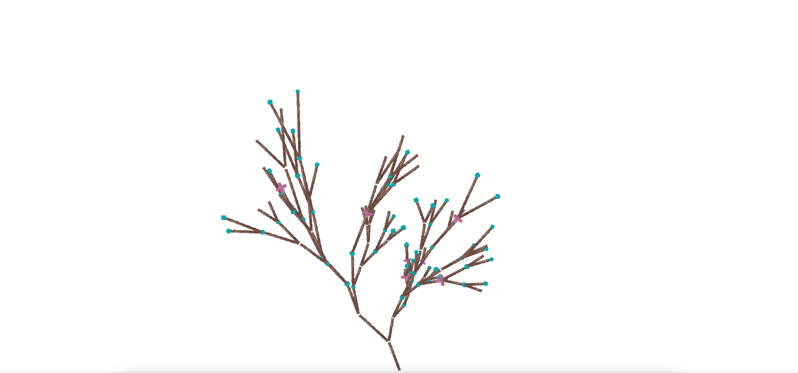
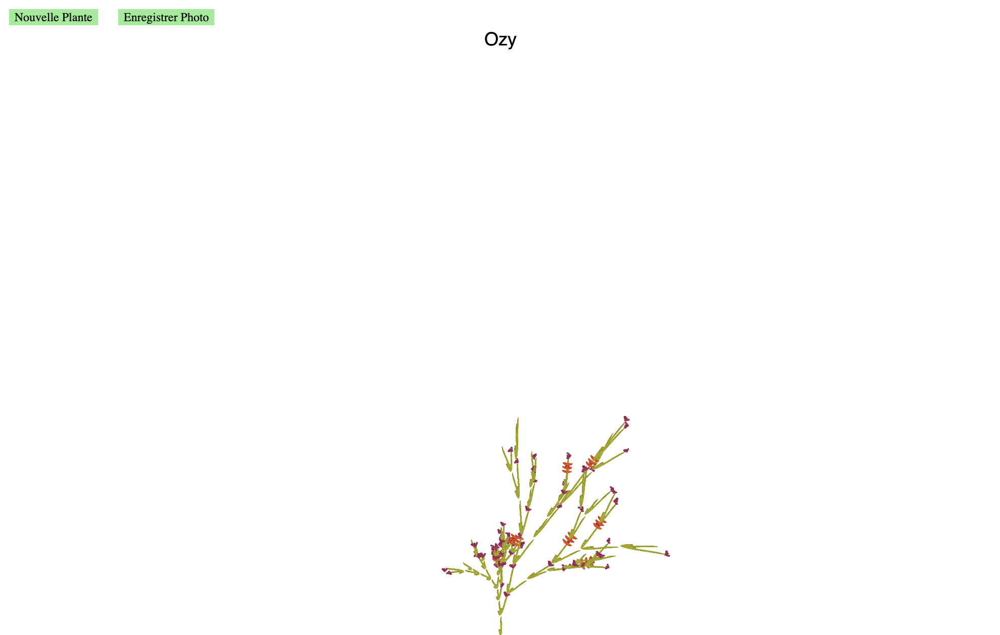
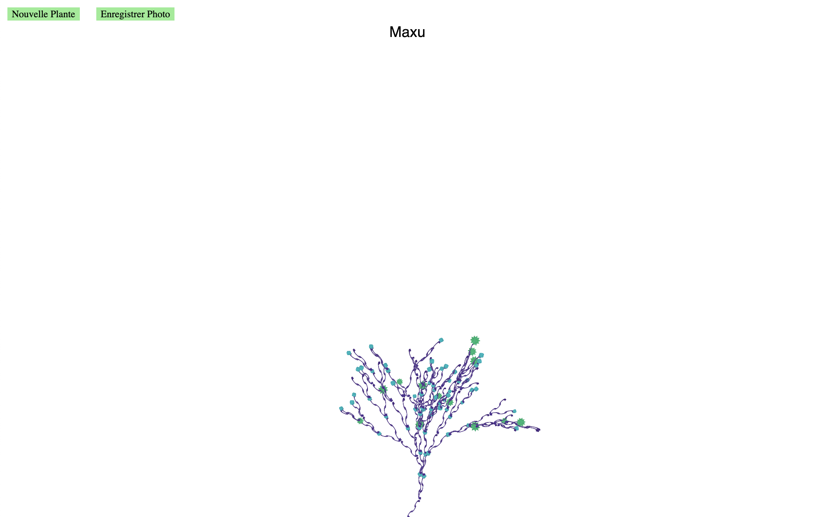

p5.js
Plantes à dessin est un générateur inspirée des Chromatophyllacées,
une espèce de plantes numériques que j’ai imaginée grâce à des générateurs.
dans laquelle les branches, les feuilles et les fleurs sont composées
de dessins réalisés à la main. Chaque plante est ainsi construite à partir
d’éléments graphiques qui remplacent les formes végétales traditionnelles.

